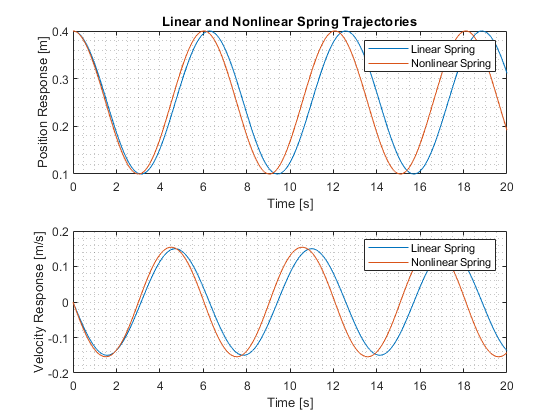
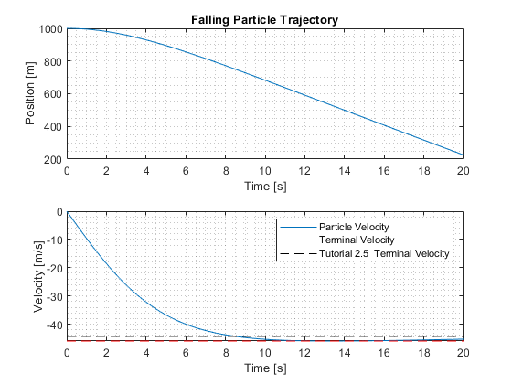

Contents
MAE 562 HW1 Gabriel Colangelo 50223306
clear
close all
clc
Problem 2.13
m = 1 ;
x0 = 0.25 ;
k = 1 ;
c = 5 ;
IC = [.4 0]' ;
time = (0:.01:20)' ;
options = odeset('AbsTol',1e-8,'RelTol',1e-8) ;
[T1,Z1] = ode45(@(t,z) LinearSpring(t,z,m,x0,k),time,IC,options) ;
[T2,Z2] = ode45(@(t,z) NonlinearSpring(t,z,m,x0,k,c),time,IC,options) ;
figure
ax1 = subplot(2,1,1);
plot(T1,Z1(:,1),T2,Z2(:,1))
xlabel('Time [s]')
ylabel('Position Response [m]')
grid minor
title('Linear and Nonlinear Spring Trajectories')
legend('Linear Spring','Nonlinear Spring')
ax2 = subplot(2,1,2);
plot(T1,Z1(:,2),T2,Z2(:,2))
xlabel('Time [s]')
ylabel('Velocity Response [m/s]')
grid minor
legend('Linear Spring','Nonlinear Spring')
linkaxes([ax1 ax2],'x')

Problem 2.18
M = 5.9742e24 ;
Re = 6378100 ;
G = 6.673e-11 ;
h = 7000 ;
m = 10 ;
IC = [1000 0]' ;
[T3,Z3] = ode45(@(t,z) FallingParticle(t,z,M,G,Re,m,h),time,IC,options) ;
figure
ax1 = subplot(2,1,1);
plot(T3,Z3(:,1))
xlabel('Time [s]')
ylabel('Position [m]')
grid minor
title('Falling Particle Trajectory')
ax2 = subplot(2,1,2);
plot(T3,Z3(:,2))
line([0 20],[min(Z3(:,2)) min(Z3(:,2))],'Color','red','LineStyle','--')
line([0 20],[-44.2945 -44.2945],'Color','black','LineStyle','--')
xlabel('Time [s]')
legend('Particle Velocity','Terminal Velocity','Tutorial 2.5 Terminal Velocity')
ylabel('Velocity [m/s]')
grid minor
linkaxes([ax1 ax2],'x')

Function Definitions
function zdot = LinearSpring(t,z,m,x0,k)
z1 = z(1,1);
z2 = z(2,1);
zdot(1,1) = z2;
zdot(2,1) = -k/m*(z1 - x0);
end
function zdot = NonlinearSpring(t,z,m,x0,k,c)
z1 = z(1,1);
z2 = z(2,1);
zdot(1,1) = z2;
zdot(2,1) = (-k/m*(z1 - x0)) -(c/m*(z1 - x0)^3);
end
function zdot = FallingParticle(t,z,M,G,Re,m,h)
z1 = z(1,1);
z2 = z(2,1);
zdot(1,1) = z2;
zdot(2,1) = (-G*M/(Re + z1)^2) + (z2^2*(.05/m)*exp(-z1/h));
end